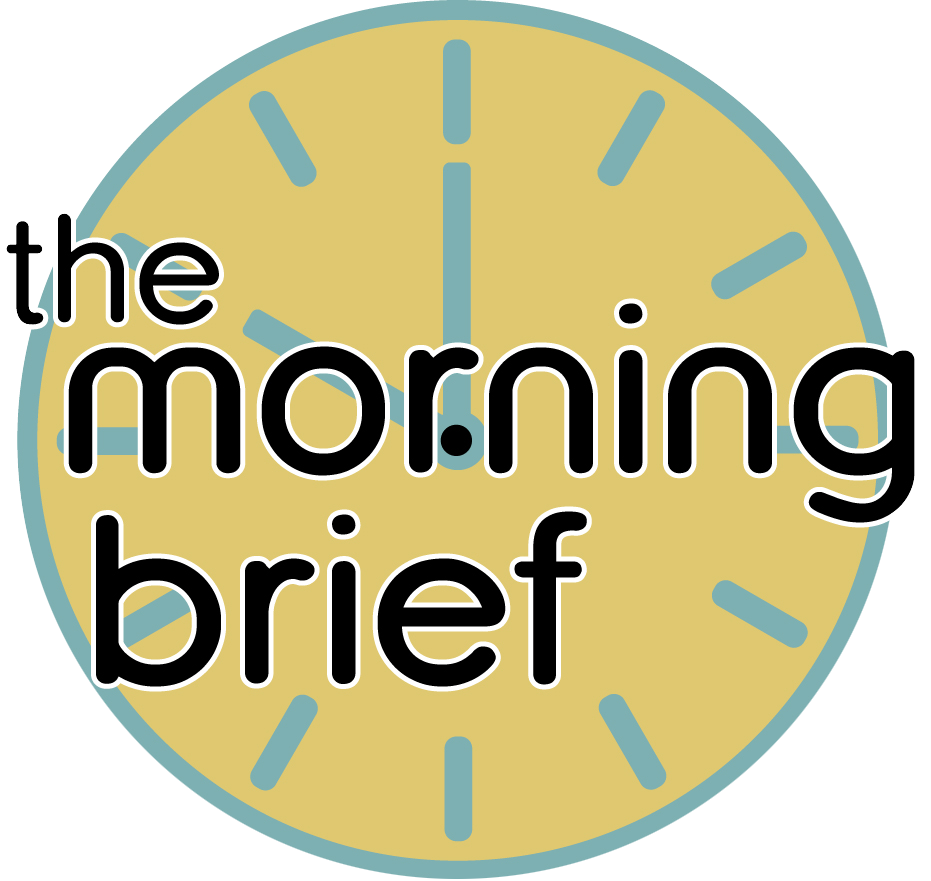

Noah and Eleanor are the hosts of The Morning Brief. They bring a unique blend of humor and insight to their daily discussions. With their on-scene reporter, Frankie, they cover the latest news and events in a way that's both informative and entertaining.